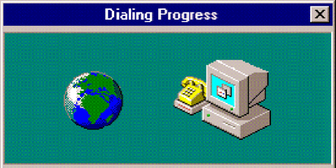
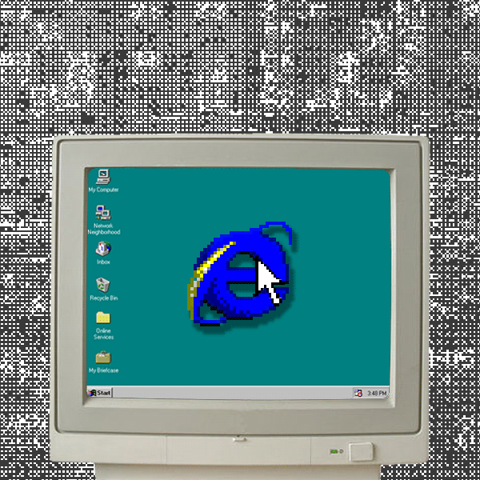

¿Qué es Internet?
Hace referencia a una gran red mundial de computadoras conectadas mediante diferentes tipos de enlaces (satelitales, por radio o, incluso, submarinos). Esta gran Red permite compartir información.
¿Qué son los proveedores de Internet?
Una empresa que le proporciona acceso a Internet, normalmente a través de una conexión de acceso telefónico, de DSL o de banda ancha. Los ISP también pueden ofrecer servicios relacionados, como cuentas de correo electrónico, hospedaje web, registro de nombres de dominio e incluso comunicaciones de datos y servicios telefónicos
Tipos de proveedores de Internet
| Tipo | Descripción |
|---|
| ISP de acceso telefónico | Utilizan líneas telefónicas tradicionales para proporcionar acceso a Internet a los clientes, quienes se conectan a Internet marcando un número de teléfono mediante un módem. |
| ISP de DSL | La línea de suscriptor digital (DSL) proporciona velocidades más rápidas que el acceso telefónico y la conexión siempre está activa. |
| ISP por cable | Utilizan cables coaxiales para proporcionar acceso a Internet. La conexión está siempre activa y proporciona velocidades más rápidas que DSL. |
| ISP de fibra | Por medio de cables de fibra óptica proporcionan acceso a Internet. La fibra proporciona las velocidades más rápidas de todos los tipos de ISP, pero no está ampliamente disponible en todas las áreas. |
| ISP por radiofrecuencia (banda ancha inalámbrica) | En el servicio que se ofrece en lugares remotos con acceso complejo, donde no existe infraestructura de cable. Así los ISP Internet usando antenas de radiofrecuencia pueden ofrecer su servicio (habitual en zonas rurales y con un coste elevado). |
| ISP por satélite | En este caso el ISP se vale de conexiones inalámbricas vía satélite, para ofrecer servicio de internet en zonas remotas (sin infraestructura de antenas ni infraestructura por cables). Estas conexiones por satélite suelen ofrecer una rápida velocidad de descarga, pero son muy lentas en la subida. |

Protocolos de Aplicación
Carpeta Local VS Carpeta Remota
¿Qué es la experiencia de usuario?
Conjunto de factores y elementos relacionados con el proceso de interacción de un usuario respecto a un producto o servicio. A menudo, este concepto se aplica a la interacción con páginas web y aplicaciones.

¿Qué es interfaz de usuario?
Consiste en un medio que facilita el control de un software o hardware específico, por parte de un usuario. De tal manera que, la UI acepta que un cliente lleve a cabo acciones e interactúe con las diversas opciones que ofrece un equipo electrónico.